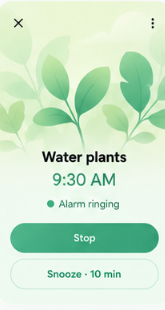
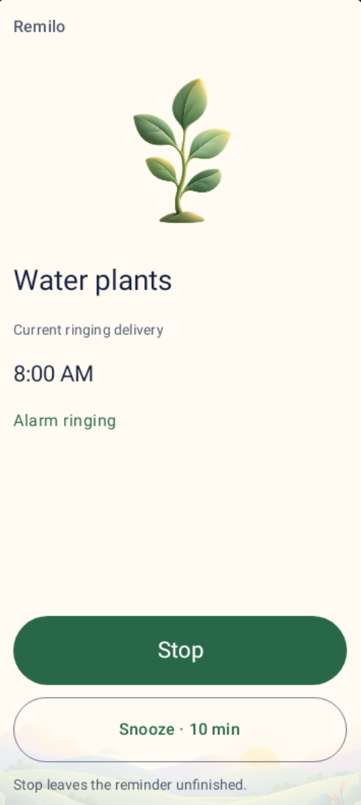
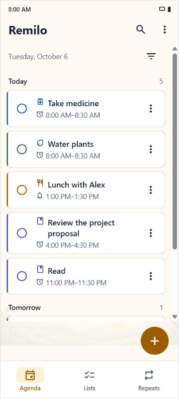
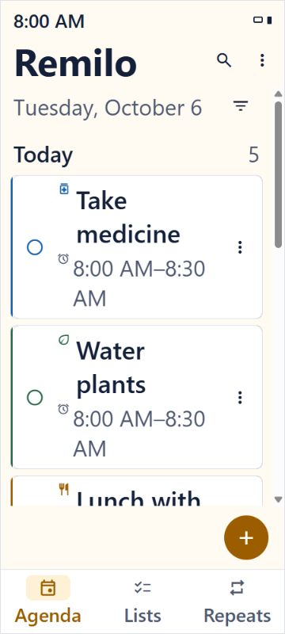
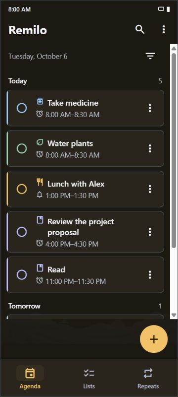
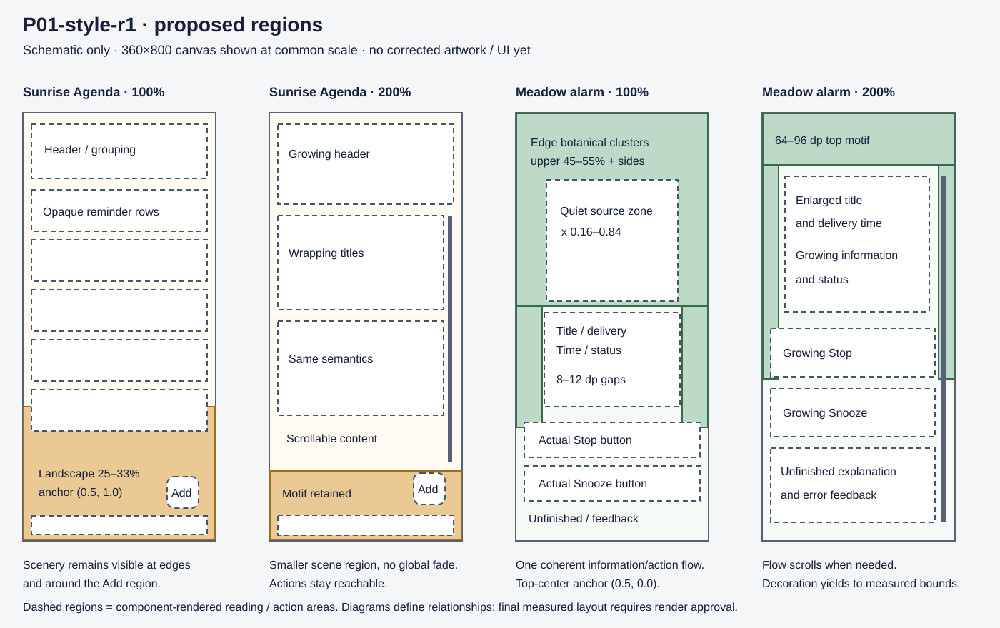

Remilo P01 · Proposed style brief r1
Soft environmental illustration: rounded asymmetric leaves, curved stems, broad layered hills, simple clouds and an integrated sun. Depth comes from overlapping silhouettes and restrained tonal gradients. Sunrise uses cream/honey/peach; Meadow uses mint/sage with several edge-rooted botanical clusters.
Read the full contract · Exact revision hashes · Baseline manifest. Supplied images remain unchanged. Current renders use synthetic fixtures and actual RN/Compose components; they are host evidence.
Water plants · reference and freshly rendered current
Equal image display width; aspect ratios preserved. The desired mockup prints 9:30 AM. The current synthetic delivery is 6 October 2026, 08:00, America/Los_Angeles. The right column explains the proposed change; it is not a corrected screenshot.





Sunrise Agenda · fresh RN baseline






Proposed scene / content regions
These annotated region diagrams are the concrete composition brief. They contain no corrected illustration assets and are not rendered product screens. Actual bounds and contrast remain render acceptance criteria.

Preserved intake matrix
Native capture index records 12 actual Compose images: light/dark at 100%/200%, top/control views, plus English/Chinese at 200%. RN images and DOM/bounds records include the four configurations, long titles, overdue/changed-delivery content and a scrolled 200% control view. Evidence notes distinguish observations from future acceptance checks.